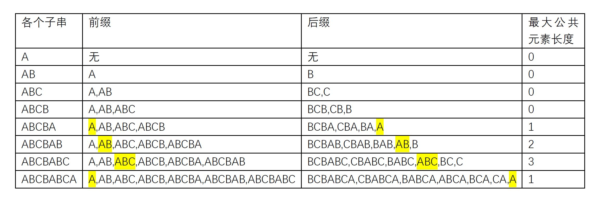

KMP详解
Knuth-Morris-Pratt字符串查找算法（简称为KMP算法）。此算法通过运用对这个词在不匹配时本身就包含足够的信息来确定下一个匹配将在哪里开始的发现，从而避免重新检查先前匹配的字符。
匹配表
KMP的关键是部分匹配表。使用前缀和后缀来获取匹配表的值。

char: | A | B | C | B | A | B | C | A |
index: | 0 | 1 | 2 | 3 | 4 | 5 | 6 | 7 |
value: | 0 | 0 | 0 | 0 | 1 | 2 | 3 | 1 |
[
http://jakeboxer.com/blog/2009/12/13/the-knuth-morris-pratt-algorithm-in-my-own-words/
http://www.matrix67.com/blog/archives/115
https://www.cnblogs.com/cherryljr/p/6519748.html
https://www.cnblogs.com/zhangtianq/p/5839909.html
http://www.ruanyifeng.com/blog/2013/05/Knuth%E2%80%93Morris%E2%80%93Pratt_algorithm.html
https://blog.csdn.net/v_july_v/article/details/7041827#t9
https://github.com/61mon/61mon.com-blog-articles/blob/master/183-KMP%E7%AE%97%E6%B3%95%EF%BC%881%EF%BC%89%EF%BC%9A%E5%A6%82%E4%BD%95%E7%90%86%E8%A7%A3KMP.md
http://jakeboxer.com/blog/2009/12/13/the-knuth-morris-pratt-algorithm-in-my-own-words/
]